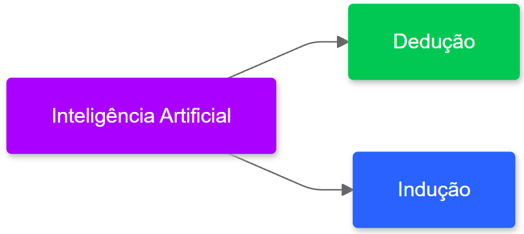
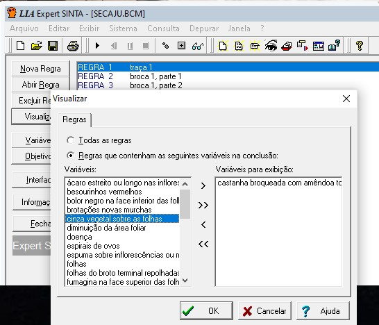
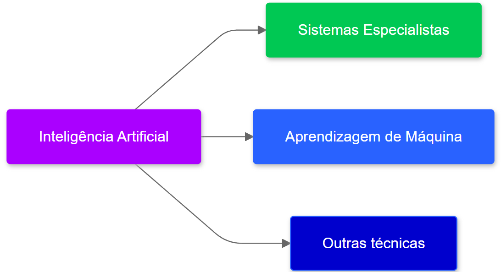
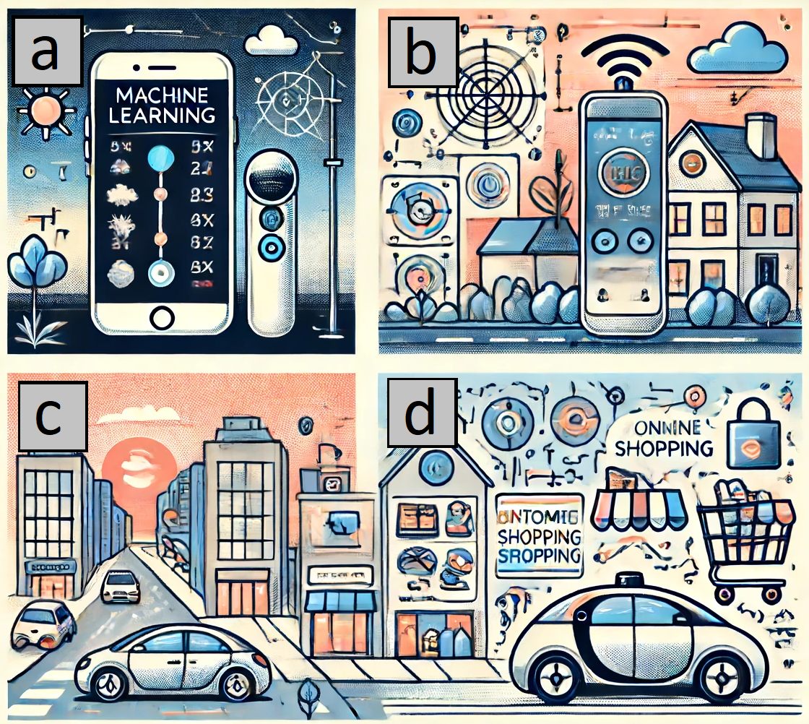
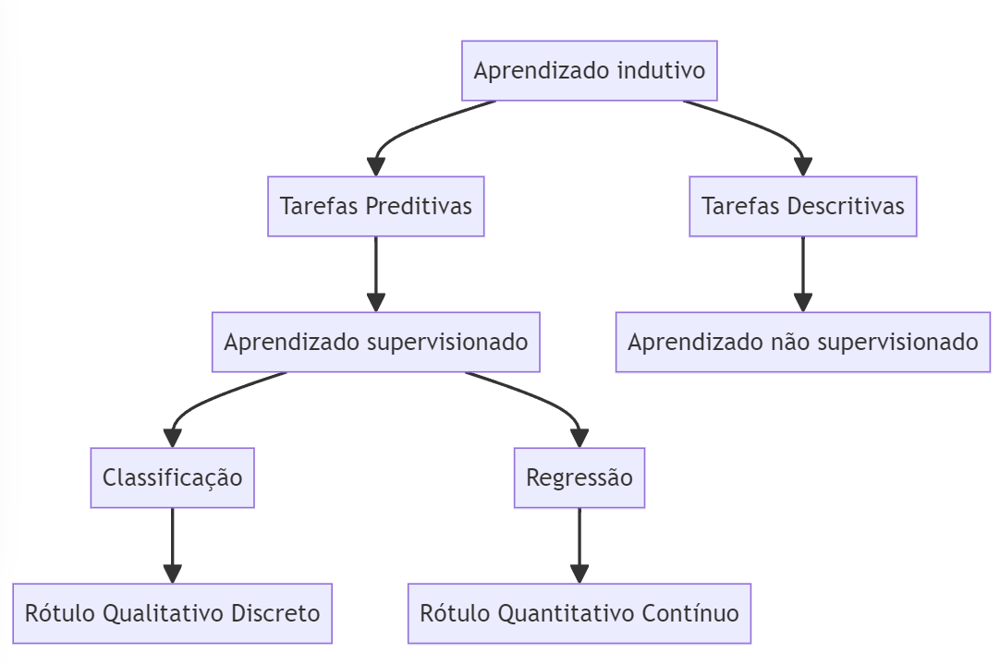

1 Introdução
Objetivo do capítulo Apresentar a inteligência artificial, o aprendizado de máquina e a regressão linear.
1.1 Inteligência Artificial
A inteligência tem definições que dependem do contexto. Isso pode trazer certa confusão no entendimento e delimitação do tema. Menos abrangente, porém mais confuso ainda, é o termo artificial. Portanto, dado as diversas definições de inteligência artificial (IA) delimitaremos um pouco o escopo da inteligência em questão.
Nós humanos somos da espécie Homo-Sapiens. Esta definição vem do latim e significa homem sábio [@wikipediahumano]. A importância da sapiência (sinônimo de inteligência) é tamanha que define a nossa espécie. A IA já vem sendo objeto da imaginação humana a muito tempo. Por exemplo, ela já apareceu em nossa cultura de diversas formas, tais como, a IA falante HAL 9000, que controla uma nave espacial, no filme “2001 uma Odisseia no Espaço”, clássico de Stanley Kubrick, ou como a IA do filme “Ela”, com o ator Joaquin Phoenix, onde um humano se apaixona por um sistema operacional. No entanto, a IA já apareceu na literatura a milhares de anos. Na Grécia Antiga já era pensado e discutido os impactos de um ser artificial capaz de desenvolver tarefas humanas. Um exemplo é o Gigante Talos de Creta, um autômato proveniente da mitologia grega [20]. Outros exemplos relacionados a inteligência artificial podem ser encontrados no livro “Artificial Intelligence: An Illustrated History: From Medieval Robots to Neural Networks” em [@pickover2021artificial]. Porém, neste contexto consideramos que outras espécies além dos Homo-Sapiens, tais como um gato, um cachorro ou uma abelha, também são dotados de inteligência. Portanto, seremos mais contidos e reservados quanto ao significado do termo inteligência.
Inteligência e artificial são palavras que têm significado implícito para pessoas que não são da área de computação. Naturalmente, médicos, advogados, engenheiros (só para citar alguns) querem verificar como a IA pode ser inserida em sua rotina diária. Meu dentista já quis saber como a IA iria afetar seus procedimentos odontológicos. Porém, ele nunca me perguntou em como a “Transformada de Fourier” poderia melhorar o seu dia-a-dia, mesmo sabendo que a transformada já é utilizada em vários domínios do conhecimento e com entusiasmo [@wikipediafourier].
Uma definição mais formal da IA ainda é necessária. A IA da computação está mais relacionada com a capacidade de realizar coisas que seres inteligentes (tais como, um gato, um bebê, uma abelha, ou um humano) realizam, como, por exemplo, puxar a mão (ou pata) instantaneamente ao tocar em uma superfície quente, realizar uma prova objetiva de anatomia, ou elaborar um recurso para a anulação de uma questão de concurso. Se um programa realiza uma ação geralmente realizada por uma entidade dotada de inteligência, ele pode ser encarado como um programa que simula uma inteligência de forma artificial. Convenhamos que praticamente qualquer coisa cabe neste conceito. Também poderíamos chamar esta área com qualquer outro nome sem sofrer nenhum prejuízo, mas o termo trouxe essas associações que as vezes ajudam e outras vezes confundem o interessado. Sobre a definição de IA, o livro de Russel e Norvig, tem uma boa definição sobre o tema: “O campo da inteligência artificial [...] tenta não apenas compreender, mas também construir entidades inteligentes” (tradução nossa) [@norvig2002]. Em outras palavras, a inteligência artificial da ciência da computação tem o audacioso objetivo de construir agentes dotados de inteligência.
A origem do termo “inteligência artificial”, na ciência da computação, é geralmente atribuída a John McCarthy, professor de Matemática da Universidade Dartmouth College [@blipblog] (Figura 1.3). Ele organizou uma conferência com duração de oito semanas com outros colegas em 1956, alguns anos após a segunda guerra, e desde então o termo vem sendo utilizado para designar parte de conteúdos estudados em ciência da computação. Um pouco antes, o artigo seminal de Alan Turing já apresentava reflexões sobre a inteligência que uma máquina poderia possuir [@Turing1950]. Cabe ressaltar que Alan Turing e John McCarthy já trabalhavam em conjunto. Outros pesquisadores também foram relevantes para a área em questão, tais como, Warren McCulloch, Walter Pitts, Allen Newell, Herbert A. Simon, Cliff Shaw e Frank Rosenblatt, entre outros.

Podemos classificar as diversas técnicas de IA em dois grupos: dedução e indução. A dedução faz inferências a partir de regras gerais, enquanto que a indução realiza inferências a partir da generalização de eventos individuais. Veja na Figura 1.4.

Foi na década de 1970 que o uso da inteligência artificial começou a ser mais difundido. Uma das primeiras abordagens com relativo sucesso foram os Sistemas Especialistas (SE). Eles dependiam dos especialistas do domínio para transformar o conhecimento tácito (baseado em sua experiência) em explícito (formalizado, documentado), que era então codificado na forma de regras em lógica formal. O processo de aquisição desse conhecimento acabou sendo um grande obstáculo na adoção em massa dessa abordagem. Veja um exemplo de software que implementa um motor de inferência baseado na teoria dos SE na Figura 1.5

A superação de algumas limitações (tais como, o aumento da capacidade de processamento e armazenamento dos computadores, a geração de grandes volumes de dados, novidades científicas e tecnológicos, chips supercondutores e a eficiência energética) permitiu o avanço de outras técnicas. Uma das técnicas que tem ganhado notoriedade, por causa destes avanços, é o Aprendizado de máquina (Figura 1.6).

1.2 Aprendizado de Máquina (AM)
O Aprendizado de Máquina (AM) é uma subárea da IA motivada pelo desenvolvimento de softwares mais independentes da intervenção humana para extração do conhecimento, o que era uma dificuldade nos Sistemas Especialistas. Geralmente aplicações de AM utilizam indução para buscar por modelos capazes de representar o conhecimento existente nos dados.
Na Figura 1.7, é possível identificar alguns usos de AM integrado em algumas atividades cotidianas. São elas, (a) um smartphone com um assistente de voz fornecendo atualizações meteorológicas; (b) um sistema de casa inteligente ajustando o termostato com base nas preferências do usuário; (c) um carro autônomo dirigindo em uma rua movimentada da cidade; (d) uma plataforma de compras online recomendando produtos a um usuário com base em suas compras anteriores. Essa figura foi criada inclusive com uma inteligência artificial chamada Dalle3, disponível no ChatGPT. ChatGPT é um chatbot que ganhou notoriedade sendo foi um dos aplicativos que mais ganhou usuários rapidamente no mundo.

As tarefas de aprendizado de máquina podem ser divididas entre tarefas preditivas e descritivas. As tarefas de aprendizado preditivas visam inferir o atributo alvo de uma nova entrada a partir da exposição prévia aos dados durante o treinamento do modelo. As tarefas descritivas buscam extrair padrões e correlações, além disso, não existe esta distinção entre atributos alvo e preditivos.

Ambas as tarefas podem ser categorizadas sob o conceito de aprendizado indutivo, sendo a capacidade de generalizar a partir de exemplos específicos, isto é, do conjunto de dados de treinamento. Em se tratando de tarefas preditivas, os algoritmos poderão implementar tarefas de classificação, nas quais o atributo alvo é qualitativo discreto (ou categórico), ou de regressão, em que o atributo alvo é quantitativo contínuo (ou numérico). Já as tarefas descritivas podem ser: agrupamento, que busca por similaridades, associação, que busca por padrões frequentes, e sumarização, que resulta em um resumo do conjunto de dados.
No entanto, outras técnicas de aprendizagem de máquina supervisionadas e não supervisionadas, com exceção da regressão linear estão fora do escopo deste livro. Importante não confundir a regressão linear com a classificação regressão da aprendizagem de máquina. Regressão linear é um algoritmo que será utilizado para realizar, por exemplo, um aprendizado supervisionado.
1.3 Regressão Linear
A regressão linear é uma técnica estatística utilizada para modelar e analisar a relação entre uma variável dependente e uma ou mais variáveis independentes. Ela fornece uma maneira de entender como a variável dependente muda à medida que uma ou mais variáveis independentes se alteram. Através da análise da tendência dos dados, a regressão linear permite fazer previsões e identificar padrões. Esta técnica é amplamente utilizada em áreas como economia, ciências sociais, engenharia, medicina e muitas outras.
Na regressão linear, a variável dependente é representada como uma combinação linear das variáveis independentes, onde os coeficientes da combinação linear são estimados a partir dos dados observados. Isso possibilita a criação de um modelo matemático que descreve a relação entre as variáveis. Alguns conceitos básicos incluem a equação da linha de regressão, o coeficiente de inclinação, o coeficiente de intercepto e a noção de erro residual. Compreender estes conceitos é fundamental para aplicar e interpretar corretamente a regressão linear.
Exemplo com conjunto de dados fictício
Na aprendizagem de máquina, a regressão linear é frequentemente utilizada como um ponto de partida para a modelagem preditiva. Sua simplicidade e interpretabilidade fazem dela uma ferramenta valiosa para explorar dados e entender relações entre variáveis. Ela é a base para muitos algoritmos de aprendizagem supervisionada e serve como um benchmark (ou linha de base, em inglês baseline) para modelos mais complexos. Além disso, ela é amplamente utilizada em áreas como economia, finanças, biologia, e engenharia, onde a previsão de valores contínuos é necessária.
Para exemplificar criaremos um modelo preditivo a partir de um conjunto de dados com 2 atributos preditores \(X1\) e \(X2\) e um atributo alvo \(Y\). \(X1\) poderia ser, por exemplo, os anos de estudo, e \(X2\) a idade, \(Y\) poderia ser o salário.
Existe uma função que gerou os dados de treino e ela é desconhecida. Essa função é também designada por god function, \(g(x)\). Queremos encontrar outra função \(f(x)\), num universo de funções disponíveis que mais se aproxima de \(g(x)\). A premissa é que o engenheiro de aprendizagem de máquina não conhece e nunca conhecerá a função \(g(x)\), que gerou os dados, mas ele irá dar um melhor chute técnico para esta função, que será chamará de \(f(x)\), como ela é uma função aproximada e estimada, colocaremos um chapéu, portanto ela será chamada de \(\hat{f}(x)\).
Primeiro tentaremos inferir esta função \(\hat{f}(x)\) com nossa inteligência humana. Em seguida utilizaremos um modelo preditivo e compararemos se a técnica de inteligência artificial de aprendizagem de máquina chegou em um resultado similar.
| X1 | X2 | y |
|---|---|---|
| -4 | -4 | 0 |
| -3 | -3 | 0 |
| -2 | -2 | 0 |
| -1 | -1 | 0 |
| 0 | 0 | 0 |
| 1 | 1 | 1 |
| 2 | 2 | 1 |
| 3 | 3 | 1 |
| 4 | 4 | 1 |
| 5 | 5 | 1 |
| 6 | 6 | 1 |
O conjunto de dados está disposto na Tabela [tb:dadosficticios]. Note que este é um exemplo didático, geralmente os conjuntos de dados são bem mais complexos. Neste exemplo a tabela é todo o nosso conjunto de dados. Neste formato, também a chamamos de matriz. A coluna \(X1\) e \(X2\) equivale a dois atributos, onde cada atributo/coluna pode ser representado por um vetor (que nada mais é que uma matriz com uma única coluna), juntos eles formam uma matriz de preditores \(X_{pred}\) de duas dimensões. Já \(y\) é uma coluna que pode ser entendida como um vetor (ou uma matriz com uma única coluna) contendo um atributo alvo.
Utilize a sua intuição. A partir dos dados de treino da Tabela [tb:dadosficticios], qual seria o valor de \(y\) para uma nova observação com os valores \(X1=8\) e \(X2=8\)?
Após ter utilizado a sua intuição (ou lógica) - com a sua inteligência humana - é a vez da inteligência artificial. A máquina irá fazer o mesmo que você fez, ou seja, dar um melhor chute utilizando uma técnica específica para inferir o valor de uma nova observação. Utilizaremos a regressão logística (que é bem próximo da regressão linear) implementada na famosa biblioteca scikit-learn, com a linguagem Python, para construção deste preditor, treino e previsão.
No exemplo a seguir implementamos um preditor com a técnica de regressão logística. E realizaremos uma previsão de uma nova observação com os atributos (\(X1=8\) e \(X2=8\)). Previsão esta que foi realizada pela inteligência humana do leitor anteriormente.
# Carregando as bibliotecas necessárias
import numpy as np
import pandas as pd
from sklearn.linear_model import LogisticRegression
# carregando dados fictícios
X = np.array([[-3,-3], [-2,-2], [-1,-1], [0,0], [1,1], [2,2], [3,3],
[4,4], [5,5], [6,6]])
y = np.array([0, 0, 0, 0, 1, 1, 1, 1, 1, 1])
# Treino do modelo
model = LogisticRegression()
model.fit(X, y)
# Previsão
print('Previsão: y =', model.predict([[8, 8]]))Previsão: y= [1]O resultado do modelo preditivo para os dados de teste \(X1=8\) e \(X2=8\) foi \(y=1\). Compare-o com o que você havia imaginado. A máquina artificialmente chegou no mesmo resultado que você?
Exemplo com outro conjunto de dados
No exemplo a seguir apresentamos um modelo preditivo em Python utilizando a mesma biblioteca (scikit-learn). O modelo utiliza o algoritmo Regressão Logística e o conjunto de dados iris, sendo um conjunto de dados com a medida da pétala e sépala, além do nome das flores. O Iris é conhecido e bastante utilizado em outros livros e sites, pois seus dados são linearmente separáveis.
# Carregando as bibliotecas
from sklearn.linear_model import LogisticRegression
from sklearn.datasets import load_iris
# Carregando os dados
iris = load_iris()
X = iris.data
y = iris.target
# Treinando o modelo
reg = LogisticRegression()
reg.fit(X, y)
# Realizando a previsão
print('Previsão: y=', reg.predict([[2, 2, 2, 2]]))Previsão: y=[0]Não se preocupe agora em entender o código ou as métricas do modelo neste momento. Nos próximos capítulos iremos nos aprofundar nos conceitos necessários para o entendimento completo destes exemplos.
No final de cada capítulo tem uma lista de questões para reforçar o aprendizado. O gabarito está no final do livro. Bons estudos.
1.4 Exercícios
Qual é a principal definição de inteligência artificial (IA)?
A capacidade das máquinas de realizar operações matemáticas complexas.
A construção de máquinas que podem simular o comportamento humano.
O desenvolvimento de sistemas que realizam tarefas consideradas inteligentes por humanos.
A criação de softwares para automação industrial.
Quem é creditado com a origem do termo “inteligência artificial?”
Alan Turing
John McCarthy
William Gibson
Norvig e Russel
Qual foi uma das primeiras abordagens de IA com relativo sucesso?
Aprendizado de máquina
Redes neurais
Sistemas Especialistas
Algoritmos genéticos
Qual é uma vantagem do aprendizado de máquina em relação aos Sistemas Especialistas?
Maior dependência da intervenção humana.
Extração de conhecimento mais independente da intervenção humana.
Implementação mais complexa e cara.
Necessidade de menos dados para treinamento.
Qual é uma das principais razões para o avanço das técnicas de inteligência artificial nas últimas décadas?
A diminuição do interesse em IA após os anos 1970.
O aumento da capacidade de processamento e armazenamento dos computadores.
A redução da necessidade de dados para treinamento dos modelos.
O desenvolvimento de sistemas totalmente independentes de intervenção humana.